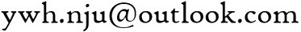

Currently, I am pursuing the doctoral degree under the supervision of Prof. Chang Xu and Prof. Xiaoxing Ma at Nanjing University.
Research
My research interests include software engineering, software testing, and self-adaptive systems. Particularly, my current work focuses on verification and validation of self-adaptive systems.
Publication
Wenhua Yang, Yepang Liu, Chang Xu, and S.C. Cheung. A Survey on Dependability Improvement Techniques for Pervasive Computing Systems. Science China Information Sciences (SCIS), Vol. 58, No. 5, Article 052102, pp. 1-14, May 2015.
Zelin Zhao, Xiaoxing Ma, Chang Xu, and Wenhua Yang. Automated Recommendation of Dynamic Software Update Points. In Proceedings of the 6th Asia-Pacific Symposium on Internetware (INTERNETWARE 2014), pp. 136-144, Hong Kong, China, Nov 2014.
Wang Xi, Chang Xu, Wenhua Yang, Ping Yu, Xiaoxing Ma, and Jian Lu. SHAP: Suppressing the Detection of Inconsistency Hazards by Pattern Learning. In Proceedings of the 21st Asia-Pacific Software Engineering Conference (APSEC 2014), pp. 414-421, Jeju, Korea, Dec 2014.
Yepang Liu, Chang Xu, S.C. Cheung, and Wenhua Yang. CHECKERDROID: Automated Quality Assurance for Smartphone Applications. International Journal of Software and Informatics (IJSI), Vol. 8, Iss. 1, pp. 21-41, 2014.
Wenhua Yang, Chang Xu, Yepang Liu, Chun Cao, Xiaoxing Ma, and Jian Lu. Verifying Self-adaptive Applications Suffering Uncertainty. In Proceedings of the 29th IEEE/ACM International Conference on Automated Software Engineering (ASE 2014), pp. 199-209, Vasteras, Sweden, Sept 2014.
Wenhua Yang, Chang Xu, and Linghao Zhang. IDEA: Improving Dependability for Self-Adaptive Applications. In Proceedings of the ACM/IFIP/USENIX International Middleware Conference (MIDDLEWARE 2013 Doctoral Symposium), Article 1, pp. 1-6, Beijing, China, Dec 2013.
Chang Xu, Wenhua Yang, Xiaoxing Ma, Chun Cao, and Jian Lu. Environment Rematching: Toward Dependability Improvement for Self-Adaptive Applications. In Proceedings of the 28th IEEE/ACM International Conference on Automated Software Engineering (ASE 2013), pp. 592-597, Silicon Valley, California, USA, Nov 2013.
Wang Xi, Chang Xu, Wenhua Yang, Xuezhi Hong. An Empirical Study of How Context Inconsistency and Its Resolution Impacts Context-aware Applications. In Proceedings of the National Software Application Conference (NASAC 2013), Article 25, pp. 1-11, Tianjin, China, Nov 2013.
Contact
| Email: |  |
| Office: | Room 812, Building of Computer Science and Technology, Xianlin Campus of Nanjing University |
| Addr: | Wenhua Yang Department of Computer Science and Technology, Nanjing University, 163 Xianlin Avenue, Qixia District, Nanjing 210023, China |
Other
Honors and Awards
Fujitsu Scholarship, Nov 2013
Excellent Graduates Awards, Jul 2012
National Scholarship for Encouragement, Oct 2011 and Oct 2010